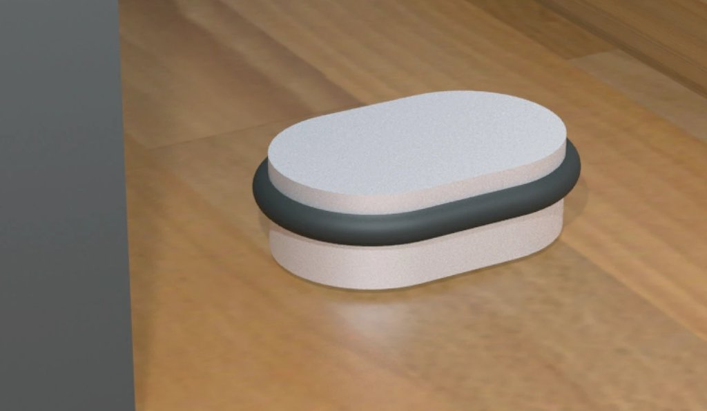

Door Stopper
Concepció d'un topall de porta minimalista i delineació completa de plànols tècnics orientats a fabricació.
Reduir un objecte quotidià a la seva essència geomètrica, garantint una fabricació senzilla i una absorció d'impactes duradora.
El conjunt combina un cos principal sòlid i compacte amb una anella perimetral d'elastòmer dissenyada per protegir les fulles de les portes. L'arquitectura de quatre components facilita el muntatge, la fixació oculta a terra i la producció en sèrie.
Detall constructiu i muntatge
Cada cota i tolerància s'ha definit directament a SolidWorks pensant en processos estàndard de mecanitzat i emmotllament. L'objectiu és evitar operacions secundàries innecessàries i assegurar un encaix net sense joc mecànic.

Proposta completa desenvolupada amb documentació tècnica de producció, vistes seccionades i llista de materials preparada per a industrialització.
Veure projecte a Behance